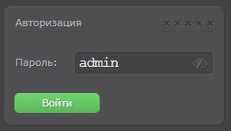

Эта админка позволяет редактировать техты простых сайтов.
Для того что бы ее установить, наобходимо скачать архив с файлами с официального сайта разработчика
После того как скачали архив, разархивируем его и получившуюся папку называем "admin" (на самом деле вообще пофиг как мы ее назовем.). После помещаем эту папку в корень нашего хостинга.
Теперь что бы зайти в админку вводим адрес сайт затем слеш и название нашей папки:
Откроется окно админ панели где надо ввести пароль для входа. По умолчанию пароль admin
После того как мы авторизовались нам доступны все файлы которые мы можем править.